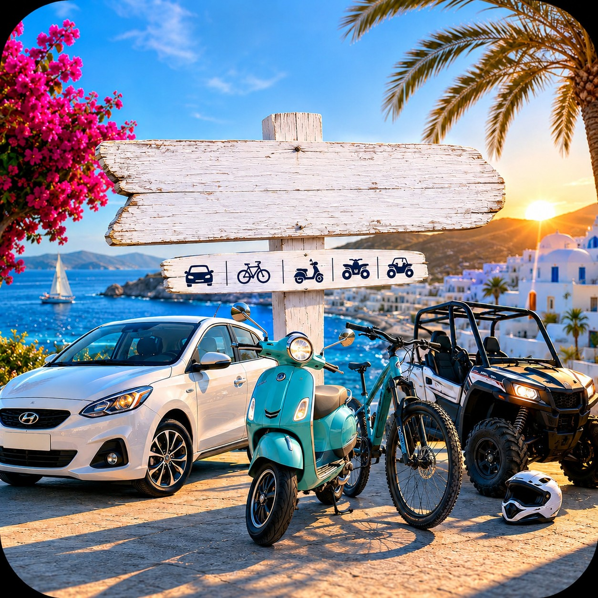

Wat je kunt huren
Fiets, kinderfiets, elektrische fiets, tandem, mountainbike, scooter, buggy, quad, auto en boot. Boten vertrekken onder meer vanuit Kos-stad en Kardamena.

Op Kos huur je fiets, scooter, auto, buggy, quad of een boot. De gids noemde geen vaste prijzen, die hangen van het seizoen af.
Fiets, kinderfiets, elektrische fiets, tandem, mountainbike, scooter, buggy, quad, auto en boot. Boten vertrekken onder meer vanuit Kos-stad en Kardamena.
Controleer remmen, banden en of een helm bij de scooter zit. Lees de verzekering. Voor auto en scooter gelden rijbewijs en verkeersregels — die staan op aparte pagina’s. Verhuurders verbieden soms een onverharde weg, zoals het laatste stuk naar Cavo Paradiso.